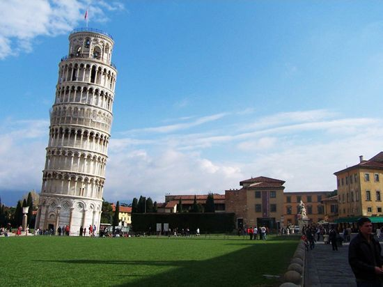

European architecture is a rich tapestry woven from diverse cultural and historical influences across the continent. From the grandeur of ancient Roman structures to the Gothic cathedrals of the Middle Ages, and from the opulent palaces of the Renaissance to the sleek modernist designs of the 20th century, European architecture encompasses a wide range of styles and periods.
 One of the most significant contributions to European architecture is the Gothic style, characterized by its pointed arches, ribbed vaults, and soaring spires. Gothic cathedrals, such as Notre-Dame de Paris and Chartres Cathedral, are iconic examples of this style, showcasing the ingenuity and craftsmanship of medieval builders.